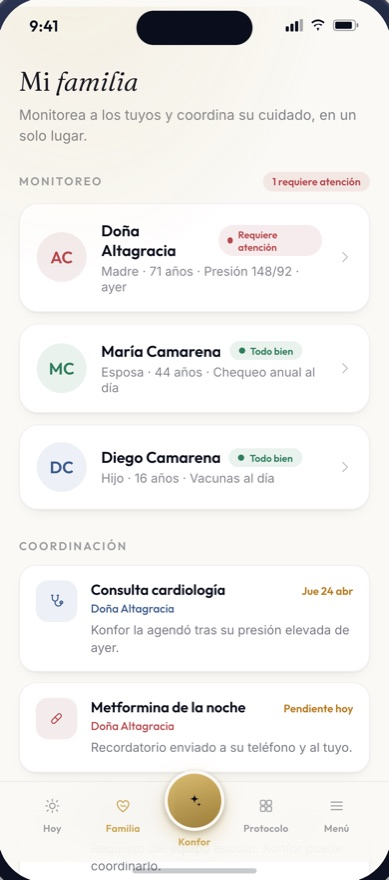

Para quien cuida a distancia
No vives con ella. Igual eres responsable.
Trabajas. Vives en la capital o en Nueva York. Ella tiene 74 y vive sola. No es que no la quieras: es que no sabes.
El cambio
Lo que sabes hoy, y lo que sabrías.
Hoy: la llamas, te dice que está bien, cuelgas y te quedas igual. Te enteras de las cosas tarde y por teléfono.
Con KONFOR: abres la app y ves el estado real de cada persona de tu círculo — cómo va la adherencia, qué quedó sin marcar hoy, si hay algo que requiere atención.
Dejas de adivinar.

La alerta
Qué la dispara, y qué te llega.
Qué la dispara
Una toma crítica que pasa su ventana. Dos días sin actividad. Una medición fuera de rango. Una llamada de seguimiento sin respuesta.
Qué te llega
El hecho, la hora y qué se hizo. No un susto: «Enalapril de las 8:00 p. m. sin marcar. Enfermería ya lo está llamando.»
Nunca vas a recibir un dato clínico crudo sin contexto ni sin que alguien ya haya empezado a actuar. Una alerta que no viene con una acción es solo ansiedad.
El límite
Lo que no puedes ver, y por qué.
No ves su expediente completo. No ves lo que habla con su médico. No ves lo que ella decidió no compartir.
Ella define los permisos y puede cambiarlos o revocarlos cuando quiera, sin avisarte y sin dar explicaciones.
Eso no es una limitación del producto. Es la única razón por la que ella va a aceptar usarlo.
La conversación difícil
Cómo se lo propones sin ofenderla.
Esta es la parte que nadie te enseña. Lo que ella oye cuando le propones esto no es «te quiero cuidar»: es «ya no confían en mí». Por eso importa cómo se dice.
No empieces por ti. «Yo me quedo más tranquilo» la convierte en tu problema.
Sí empieza por ella: «Es para que no tengas que depender de mí para nada.»
Dale el control desde el primer minuto. Que sea ella quien decide qué compartes, delante de ti, en su teléfono.
No lo plantees como una decisión definitiva. «Probémoslo un mes» quita casi toda la resistencia.